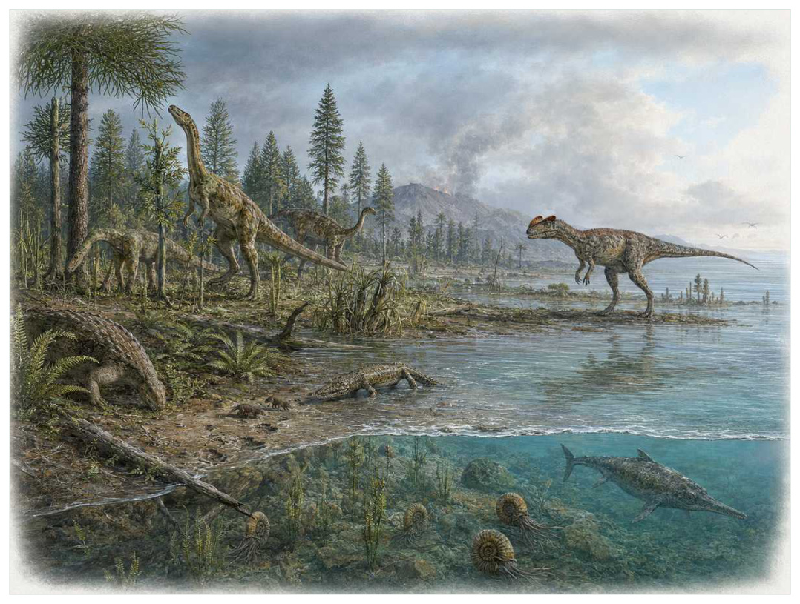

第11篇 · 三叠纪：废墟上的新生态系统 · 第 39 章
三叠纪末大灭绝：竞争者退出与恐龙扩张
本篇主题:三叠纪：废墟上的新生态系统
幸存者与新生主龙类在不稳定环境中争夺空出的生态位。

本章科学复原配图 （用于呈现结构与生态关系, 不替代化石照片、测量数据与系统发育证据。）
生命史推进到约2.01亿年前时，旧支系仍在延续，新结构也开始改变竞争规则。中央大西洋岩浆省在盘古大陆裂解初期喷发，释放大量二氧化碳并造成快速气候与碳循环波动。海洋酸化和缺氧打击菊石、礁体和许多海洋爬行动物，陆地上多种伪鳄类、大型两栖动物和其他恐龙竞争者消失。恐龙并非在灾难前就已全面取胜；灭绝清空生态位后，它们在早侏罗世扩大体型和地域范围。
进入这个时代
若真正置身其中，首先感受到的是介质本身：水是否含氧、地面是否稳定、空气是否干燥、植被是否遮挡视线。身体结构只有放在这些条件中才有意义。火山脉冲之间，气温、降水和植被不断重排。适应某一稳定河谷或特定食物的种群难以跟上快速变化。边界之后，足迹组合中恐龙比例上升，陆地大型捕食和植食角色逐步由兽脚类与蜥脚形类接管。
在“三叠纪末大灭绝：竞争者退出与恐龙扩张”所覆盖的时间里，不能把地理与气候当作固定背景。海陆位置、海平面、河流或植被结构会改变资源可达性，同一性状在不同地区可能得到完全相反的选择结果。
以三叠纪末大灭绝：竞争者退出与恐龙扩张为例，化石记录偏爱硬组织、快速埋藏和容易出露的岩层。一次“首次出现”通常只是目前所知的最早记录，一次“突然消失”也需要排除保存窗口关闭。年代、形态和环境证据必须一起解释。 在本章中，这一约束具体落在“快速碳释放引发温室升温和海洋酸化”这条关系上。
再从约2.01亿年前的时间尺度看，物种数量并不等于生态功能。一个群落即使仍有许多物种，只要初级生产、授粉、礁体建造或大型植食等关键功能消失，食物网也会表现为深度崩溃。反过来，少数机会型物种高丰度并不代表系统已经恢复。它与“火成岩省-灭绝时间耦合”共同决定了后续变化可以沿哪些路径发生。
生态系统如何运转
“快速碳释放引发温室升温和海洋酸化”体现了生态系统的反馈性。一方结构或行为稍有改变，另一方的防御、逃避、繁殖和空间选择就会重新排列，长期累积后才形成宏观演化差异。
围绕“快速碳释放引发温室升温和海洋酸化”，从演化树看，相似关系可能在远亲中反复出现。功能相近不必意味着近缘，而同一祖先结构也可能被后代改作完全不同的用途；生态解释必须与系统发育互相校验。 对三叠纪末大灭绝：竞争者退出与恐龙扩张而言，这一后果还会与“植被重组切断大型植食者食物来源”相互放大或抵消。
在约2.01亿年前，“植被重组切断大型植食者食物来源”把环境条件转化为生物之间的差异。相同气候并不会平均影响所有支系，因为它们利用的食物、水层、底质和繁殖地点并不相同。
围绕“植被重组切断大型植食者食物来源”，当环境快速越过生理阈值时，原有互动甚至来不及通过适应重新平衡。此时灭绝的选择性会更多取决于分布、食物来源和繁殖速度，而不是平时竞争中的相对强弱。 对三叠纪末大灭绝：竞争者退出与恐龙扩张而言，这一后果还会与“竞争者灭绝使幸存恐龙进入空生态位”相互放大或抵消。
本章的一条关键关系是“竞争者灭绝使幸存恐龙进入空生态位”。它首先改变资源在个体之间的分配：能更早发现、处理或占据资源的种群获得收益，而另一方会承受新的选择压力。
围绕“竞争者灭绝使幸存恐龙进入空生态位”，这种关系没有永恒赢家。收益随密度和环境改变：防御越常见，攻击专门化的价值越高；资源越稀少，维持昂贵结构的代价越大。化石记录中的扩张与衰退，常是这种动态平衡被外部事件打破的结果。对三叠纪末大灭绝：竞争者退出与恐龙扩张而言，这一后果还会与“快速碳释放引发温室升温和海洋酸化”相互放大或抵消。
关键演化创新
在“三叠纪末大灭绝：竞争者退出与恐龙扩张”中，围绕“火成岩省-灭绝时间耦合”，“火成岩省-灭绝时间耦合”没有把生物推向更高级层级，而是重新划分可利用资源。它让某些水层、食物尺寸、活动时间或繁殖地点变得可行，同时也带来能量、材料和发育控制成本。 它首先需要在约2.01亿年前的生态条件下产生可测量收益。
就“火成岩省-灭绝时间耦合”而言，研究者通过近缘支系比较、发育同源、关节活动、微观组织和出现顺序重建这条路径。真正有价值的过渡化石不是“半成品”，而是证明中间组合可以独立生活。 本章把它与“生态位释放后的辐射”并列，是为了显示复杂性状往往依赖多部分协同。
在“三叠纪末大灭绝：竞争者退出与恐龙扩张”中，围绕“生态位释放后的辐射”，“生态位释放后的辐射”一旦出现，还会改变其他物种的环境。新的捕食方式、取食高度或繁殖场所会制造选择压力，促使整个群落而不只是发明者发生响应。 它首先需要在约2.01亿年前的生态条件下产生可测量收益。
就“生态位释放后的辐射”而言，它的成功具有条件性。环境稳定时，专门化可提高效率；危机到来时，同一专门化可能限制食物和栖息地选择。演化创新因此既能开启辐射，也能制造新的脆弱性。 本章把它与“主龙类选择性幸存”并列，是为了显示复杂性状往往依赖多部分协同。
在“三叠纪末大灭绝：竞争者退出与恐龙扩张”中，围绕“主龙类选择性幸存”，“主龙类选择性幸存”没有把生物推向更高级层级，而是重新划分可利用资源。它让某些水层、食物尺寸、活动时间或繁殖地点变得可行，同时也带来能量、材料和发育控制成本。 它首先需要在约2.01亿年前的生态条件下产生可测量收益。
就“主龙类选择性幸存”而言，这一变化还可能在多个支系中独立发生。若功能相似而解剖来源不同，就是趋同；若结构来自共同祖先但功能改变，则属于同源结构的分化。二者不能仅靠外观判断。 本章把它与“火成岩省-灭绝时间耦合”并列，是为了显示复杂性状往往依赖多部分协同。
生命群像：把物种放回生态网络
雷留图鳄（Rauisuchidae）
在中晚三叠世，末期灭绝，雷留图鳄（Rauisuchidae）以约大型种可达5至7米的身体参与食物网。它不是孤立的“明星生物”，而是陆地顶级捕食伪鳄类；直立姿势和深头骨使其与大型兽脚类生态趋同决定它能利用哪些资源，也决定必须承担哪些成本。
对雷留图鳄而言，同域物种的存在迫使它分割时间与空间。相似牙齿不一定吃完全相同的食物，相似四肢也可能适应不同底质；微磨损、同位素和伴生群落常能揭示这种细分。环境改变时，原本减少竞争的专门化又可能成为迁移和改食的障碍。 这使“直立姿势和深头骨使其与大型兽脚类生态趋同”不能脱离其陆地顶级捕食伪鳄类角色来理解。
证据核心是多个属并非单一自然群，末期消失体现竞争格局被重置。化石记录更擅长回答“结构是什么”，较难回答“每天怎样行动”。足迹、胃内容物、咬痕或胚胎若存在，会显著缩小推测范围；若只有零散骨骼，行为叙述就必须更克制。
由雷留图鳄这个案例看，它所代表的身体方案后来可能消失，也可能被远亲以不同材料重新发明。生命史因此既有可重复的功能解，也有不可复制的谱系路径。两者结合，才解释现代生物为何既熟悉又偶然。它在中晚三叠世，末期灭绝留下的记录，因此同时是第39章所讨论的形态史和生态史的一部分。
坚蜥类（Aetosauria）
认识坚蜥类（Aetosauria）要先放弃静态骨架印象。它生活在晚三叠世，末期灭绝，约约1至5米，日常任务是作为装甲植食或杂食动物维持能量与繁殖。背甲、短肢和特化吻部适于低位取食或挖掘只是这一整套生活史中最容易化石化的部分。
对坚蜥类而言，它的成功不需要在所有性能上压倒其他物种，只需在特定资源和风险组合中留下更多后代。速度、咬合、装甲、感官与繁殖之间存在预算，某项性能极端化往往意味着另一项被牺牲。所谓“霸主”只是复杂权衡后的区域性结果。 这使“背甲、短肢和特化吻部适于低位取食或挖掘”不能脱离其装甲植食或杂食动物角色来理解。
判断它的生活方式时，研究者首先使用几乎全部在边界前后消失，精确灭绝节奏受地层采样影响。随后会检验替代解释：同样的牙是否也能处理其他食物，同样的骨骼比例是否由年龄造成，同一骨层是否来自群体生活还是灾难性聚集。排除过程比贴标签更重要。
由坚蜥类这个案例看，过去的复原常受完整现代动物模板影响，新材料则迫使研究者接受更陌生的身体比例或生活方式。最稳妥的表达是保留估计区间，并明确哪些软组织、颜色和社会行为仍属合理推测。 它在晚三叠世，末期灭绝留下的记录，因此同时是第39章所讨论的形态史和生态史的一部分。
植龙类（Phytosauria）
植龙类（Phytosauria）生活在晚三叠世，末期灭绝，已知体型约为大型种5米以上。它在群落中的角色可概括为半水生伏击捕食者。最值得观察的结构是鳄样身体和后置鼻孔代表高度成功的河流生态型。这些结构不是为了后来时代而准备，而是在当时直接影响摄食、运动、防御或繁殖。
对植龙类而言，从种群角度看，偶发捕猎和个体伤病远不如长期繁殖率重要。广泛分布的普通个体比一具异常巨大的标本更能代表支系，然而普通个体往往较少进入公众叙事。研究者必须防止把化石收藏偏好误当成古代丰度。 这使“鳄样身体和后置鼻孔代表高度成功的河流生态型”不能脱离其半水生伏击捕食者角色来理解。
关于它的直接依据是：与鳄趋同而非祖先关系；边界后该生态位后来被鳄形类接管。研究者还必须确认骨骼是否属于同一个体、是否被水流搬运、压扁是否改变比例，以及不同大小是否只是成长阶段。只有解剖、地层和功能证据相互一致，复原才可上调为高可信。
由植龙类这个案例看，它在生命史中的价值不在于离现代形态还有多远，而在于证明这一身体组合曾真实可行。即使没有直系后代，支系也可能在当时持续繁盛，并通过捕食、植食或栖息地工程改变其他生命的选择环境。 它在晚三叠世，末期灭绝留下的记录，因此同时是第39章所讨论的形态史和生态史的一部分。
板齿犀（Placerias hesternus）
在这一章的生命群像里，板齿犀（Placerias hesternus）不能只当作图鉴名称。它出现于晚三叠世，体型大约约3.5米，主要生活方式是大型群居可能性较高的植食兽孔类；喙嘴、獠牙和粗壮身体延续二齿兽路线到晚三叠世则说明身体怎样围绕这一生活方式进行组合。
对板齿犀而言，把它放回群落后，结构的意义更清楚。食物并不会平均分布，水深、植被高度、底质和季节把资源切成小块；它的身体让其中一部分资源可被利用，也使它与近缘种错开生态位。种群命运还取决于幼体能否成长、繁殖地点是否稳定以及灾害后是否仍有避难所。 这使“喙嘴、獠牙和粗壮身体延续二齿兽路线到晚三叠世”不能脱离其大型群居可能性较高的植食兽孔类角色来理解。
现有认识建立在骨床支持群体聚集但可能为旱灾集中死亡，二齿兽终末时间仍有区域讨论之上。古生物学的可信度不是来自一件戏剧化标本，而是来自多件标本、多个地点和不同方法得到相容结果。新发现若改变比例或分类，并非此前研究毫无价值，而是证据边界被重新画清。
由板齿犀这个案例看，从生态尺度看，它与本章其他成员共同维持一张网络。任何“最强”排名都会遗漏资源供应、幼体死亡、疾病和气候脉冲；真正决定长期成功的是种群能否在波动中不断完成繁殖。 它在晚三叠世留下的记录，因此同时是第39章所讨论的形态史和生态史的一部分。
侏罗纪早期双脊龙（Dilophosaurus wetherilli）
从外形看，侏罗纪早期双脊龙（Dilophosaurus wetherilli）最容易被记住的是双冠、轻巧头骨和强壮前肢显示兽脚类快速扩大体型。它生活在早侏罗世，危机后，大小约约6至7米，承担大型两足捕食恐龙这一生态功能。把年代、体型和功能放在一起，才能避免把奇特形态当成无意义装饰。
对侏罗纪早期双脊龙而言，同域物种的存在迫使它分割时间与空间。相似牙齿不一定吃完全相同的食物，相似四肢也可能适应不同底质；微磨损、同位素和伴生群落常能揭示这种细分。环境改变时，原本减少竞争的专门化又可能成为迁移和改食的障碍。 这使“双冠、轻巧头骨和强壮前肢显示兽脚类快速扩大体型”不能脱离其大型两足捕食恐龙角色来理解。
支持该解释的材料包括没有证据支持电影中的颈褶或喷毒；头冠更可能用于显示和物种识别。若不同证据出现冲突，应优先报告范围而不是强行给出单值。例如体长会随参照类群变化，运动能力会随软组织假设变化，系统位置也会随新增性状重新计算。
由侏罗纪早期双脊龙这个案例看，它也展示专门化的双面性：结构在稳定环境中提高效率，却可能在气候、食物或竞争格局突变时限制转向。灭绝不是对设计的道德评分，而是性状、地理范围和偶然事件相遇后的历史结果。 它在早侏罗世，危机后留下的记录，因此同时是第39章所讨论的形态史和生态史的一部分。
因果链：环境、生态与性状
如果把三叠纪末大灭绝：竞争者退出与恐龙扩张当作一次自然实验，可以追问：假如“快速碳释放引发温室升温和海洋酸化”较弱，“生态位释放后的辐射”是否仍会带来同样收益；假如“植被重组切断大型植食者食物来源”更强，雷留图鳄的直立姿势和深头骨使其与大型兽脚类生态趋同是否反而成为负担。反事实无法直接验证，却能帮助研究者识别模型隐含的因果假设。随后再用高精度定年比较喷发与灭绝脉冲和植物孢粉和叶片记录陆地变化寻找可区分的预测：不同机制应在体型分布、损伤类型、沉积环境或出现顺序上留下不同痕迹。科学解释不是为现有图景编一个顺耳故事，而是让相互竞争的解释接受同一批材料检验。
“快速碳释放引发温室升温和海洋酸化”与“竞争者灭绝使幸存恐龙进入空生态位”之间常存在反馈。一个支系改变沉积、植被或猎物数量后，环境会对其自身和其他支系产生新的选择压力；短期收益可能导致长期资源下降，局部工程行为也可能创造此前不存在的栖息地。雷留图鳄作为陆地顶级捕食伪鳄类，植龙类作为半水生伏击捕食者，即使从不直接相遇，也可能经由这种环境改造联系起来。生态系统因此不是静态背景上的竞赛场，而是参与者不断修改规则的动态结构；这正是解释三叠纪末大灭绝：竞争者退出与恐龙扩张为何会留下长期后果的关键。
亲缘关系为功能解释设定边界。“主龙类选择性幸存”若在近缘支系中以不同程度出现，最简解释通常是祖先已具备部分结构，后代分别强化或丢失；若远亲在相似生态位中出现相近功能，则需要检查内部解剖是否来自不同材料。雷留图鳄与植龙类可用于演示这一区分：外形近似不自动证明近缘，外形差异也不否定深层同源。把系统发育树、年代和生态证据叠在一起，才能判断三叠纪末大灭绝：竞争者退出与恐龙扩张中的相似究竟来自共同继承、趋同还是保留的原始特征。
从资源入口看，“快速碳释放引发温室升温和海洋酸化”决定能量首先由谁获得，而“植被重组切断大型植食者食物来源”决定能量随后怎样在群落中转移。只有当个体能够借助“火成岩省-灭绝时间耦合”把资源转化为生长或后代时，形态优势才会成为种群优势。雷留图鳄与坚蜥类分别展示了这条链上的不同位置：前者的直立姿势和深头骨使其与大型兽脚类生态趋同使其偏向陆地顶级捕食伪鳄类，后者的背甲、短肢和特化吻部适于低位取食或挖掘则服务于装甲植食或杂食动物。这并不意味着二者必然直接竞争；更常见的情况是，它们通过共享资源、改变栖息地或影响共同捕食者而间接连接。把这种间接作用纳入，才看得见三叠纪末大灭绝：竞争者退出与恐龙扩张不是物种名单，而是一张持续重新分配能量的网络。
“竞争者灭绝使幸存恐龙进入空生态位”说明环境不是在所有个体身上平均施力。若一个种群分布广、世代较短或能使用多种资源，它可能把一次局部危机吸收到地理和生活史差异之中；若另一个种群依赖狭窄水深、单一植物或特定繁殖场，平时高效的专门化就可能在变化中放大风险。坚蜥类和植龙类的差异可以用来提出这种比较，但不能仅凭外形宣布谁更适应。真正需要的是地层连续性、地区分布、年龄结构和伴生群落共同告诉我们，哪些性状在三叠纪末大灭绝：竞争者退出与恐龙扩张的具体条件下转化成了更稳定的繁殖。
时代横截面：个体、种群与证据
把雷留图鳄与坚蜥类并排观察，可以看到同一时代并不存在唯一正确的身体方案。雷留图鳄以直立姿势和深头骨使其与大型兽脚类生态趋同参与陆地顶级捕食伪鳄类，坚蜥类则依靠背甲、短肢和特化吻部适于低位取食或挖掘承担装甲植食或杂食动物；两者可能在食物尺寸、活动空间或时间上错开，从而降低直接竞争。若环境改变使这些维度重新重叠，原先共存的支系才可能发生更强替代。比较的目的不是判断谁更先进，而是识别每套结构在哪些条件下有效、在哪些条件下暴露成本。
尺度转换是三叠纪末大灭绝：竞争者退出与恐龙扩张最容易被忽略的问题。雷留图鳄的一次摄食、一次移动或一次繁殖属于分钟到季节尺度；种群扩张需要数百至数万年；“火成岩省-灭绝时间耦合”在演化树上的固定则可能跨越更久。短期观察能够说明结构怎样工作，却不能单独解释支系为何在约2.01亿年前扩张。反之，宏观多样性曲线能显示替换，却不能指出每次选择发生在什么身体和生活阶段。把尺度接起来，因果链才完整。
从失败的替代解释出发，能够看见研究如何推进。若把雷留图鳄简单解释为陆地顶级捕食伪鳄类，就应检查其直立姿势和深头骨使其与大型兽脚类生态趋同是否真的适合该功能；若另一种功能同样可行，再看磨损、同位素、沉积环境或共存生物能否区分。坚蜥类与植龙类提供了比较基线，帮助判断某一结构是普遍祖征、特殊适应还是成长阶段差异。结论不是从外观直觉跳出，而是在一系列被排除的可能性之后留下。
本章还可以作为灭绝选择性的预演。若危机首先削弱“快速碳释放引发温室升温和海洋酸化”，依赖该环节的雷留图鳄可能比外形更脆弱但食物广泛的坚蜥类更早衰退；若危机破坏的是繁殖场或幼体环境，成年体型和武器几乎不能提供保护。分布范围、成熟速度、休眠能力与食谱因此要和直立姿势和深头骨使其与大型兽脚类生态趋同、背甲、短肢和特化吻部适于低位取食或挖掘等显眼结构一起评估。危机筛选的是整套生活史，而不是单项竞技能力。
从保存角度看，雷留图鳄和坚蜥类也可能被化石记录不公平地对待。雷留图鳄的直立姿势和深头骨使其与大型兽脚类生态趋同若包含坚硬、容易辨认的部分，就更可能被采集和命名；坚蜥类若身体柔软、个体小或生活在侵蚀环境，真实丰度可能被严重低估。高精度定年比较喷发与灭绝脉冲能补充一部分信息，植物孢粉和叶片记录陆地变化又提供另一尺度的限制。只有先问“什么容易被保存”，再问“什么当时常见”，才不会把博物馆展柜的比例误当成古生态比例。
科学家为什么这样判断
使用“高精度定年比较喷发与灭绝脉冲”时必须处理保存偏差。坚硬组织、低氧埋藏和火山灰覆盖更容易留下记录，岩层出露与采集历史又决定样本数量。统计分析通常要校正这些不均匀性，避免把采样强度当作真实多样性。
围绕“植物孢粉和叶片记录陆地变化”，高可信结论通常来自独立方法一致。例如形态暗示某种食性时，微磨损、同位素或胃内容物若给出相同方向，解释便更稳固；若结果冲突，就应保留生态弹性或地区差异。
证据条目“足迹与骨骼丰度追踪恐龙相对扩张”的作用，是把肉眼可见的化石转化为可检验结论。研究者先确认样品的层位和成岩历史，再测量结构、比较近缘种并建立替代模型；若解释只在一套参数下成立，就不能写成唯一事实。
在“三叠纪末大灭绝：竞争者退出与恐龙扩张”这一问题上，把上述方法合在一起，研究者才能从残缺材料走向受约束的复原。任何一条证据都可能受到成岩、污染、样本量或现代类比的限制；结论越具体，越需要多条独立证据指向同一方向，并与约2.01亿年前的地层背景相容。
过去的图景与今天的证据
恐龙为何较多幸存没有单一公认答案。气囊式呼吸、较快生长、两足运动、小型祖先、蛋的繁殖和地域分布都可能贡献，但每项证据强度不同。把幸存写成‘恐龙更先进’既忽略灭绝偶然性，也无法解释同时幸存的其他小型爬行动物与哺乳形类。
围绕“三叠纪末大灭绝：竞争者退出与恐龙扩张”，数据存在范围时，本书使用约数而非虚假精确值。体型会因缺失骨骼和软组织密度变化，年代会因定年误差调整，灭绝比例会因分类和采样校正改变；一个区间往往比醒目的单值更科学。
对约2.01亿年前的材料而言，当多种机制可以并存时，不应为了故事简洁强迫选择唯一原因。氧气、温度、营养、捕食和地理隔离常形成反馈，研究目标是约束各环节的时间和强度，而不是寻找一句万能口号。
跨尺度观察
空间镶嵌：同一地质时期包含多个大陆、纬度和海盆。地区之间可因山脉、海峡和洋流形成不同群落，局部化石库不能代表全球平均。比较多个地点能区分真正的全球事件与区域替换。 在“三叠纪末大灭绝：竞争者退出与恐龙扩张”中，这一尺度具体连接了“快速碳释放引发温室升温和海洋酸化”与“火成岩省-灭绝时间耦合”，因而不能只从单个成年标本判断。
系统发育：直接祖先极难在化石中确认，因为旁支和祖先形态可能非常相似。更可靠的表达是某物种位于一组关键分叉附近，展示某些性状已经出现。演化树表达亲缘，不表达价值高低。 在“三叠纪末大灭绝：竞争者退出与恐龙扩张”中，这一尺度具体连接了“植被重组切断大型植食者食物来源”与“生态位释放后的辐射”，因而不能只从单个成年标本判断。
微生物底盘：宏体生态依赖微生物完成分解、固氮和碳硫循环。即使章节聚焦巨型动物，尸体最终仍由微生物和小型分解者处理；大灭绝后的恢复也往往先表现为生产和分解网络重建，而非大型动物立即回归。 在“三叠纪末大灭绝：竞争者退出与恐龙扩张”中，这一尺度具体连接了“竞争者灭绝使幸存恐龙进入空生态位”与“主龙类选择性幸存”，因而不能只从单个成年标本判断。
通向下一个时代
从本章走向下一阶段时，需要保留的不是一串物种名，而是一个因果链：环境改变可用能量与栖息地，生态关系筛选性状，性状又反过来改造环境。侏罗纪由此迎来成熟的恐龙生态系统。森林、河流、天空和海洋分别由不同支系占据，巨型蜥脚类把陆地体型推向此前未见的极限。
本章精选来源
- [R59] Nesbitt, S. J. The early evolution of archosaurs: relationships and the origin of major clades. Bulletin of the American Museum of Natural History 352, 1-292 (2011).
- [R60] Ezcurra, M. D. The phylogenetic relationships of basal archosauromorphs. PeerJ 4, e1778 (2016).
- [R61] Brusatte, S. L. et al. The origin and early radiation of dinosaurs. Earth-Science Reviews 101, 68-100 (2010).
- [R62] Whiteside, J. H. et al. Compound-specific carbon isotopes from Earth’s largest flood basalt eruptions directly linked to the end-Triassic mass extinction. Proceedings of the National Academy of Sciences 107, 6721-6725 (2010).
- [R63] Olsen, P. E. et al. Ascent of dinosaurs linked to an iridium anomaly at the Triassic-Jurassic boundary. Science 296, 1305-1307 (2002).